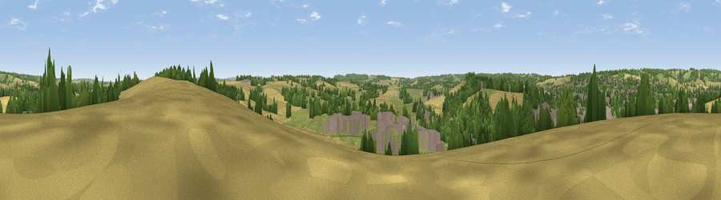

Viewpoint near Alton
#34652 in England · top 38% of its area beats it · near AltonWhere it is
The exact computed spot (SU 73225 39275). Click the marker for map links.
The view, rendered

A 360° render of this exact spot computed from the terrain model, tree cover and land cover — summer colours, afternoon light, calibrated against photographs of famous viewpoints. Real trees, hedges and buildings will differ in detail.
The panorama
Grey silhouette: terrain skyline in each direction (720 bearings, Earth curvature and refraction included). Dashed green: skyline with trees (+15 m) and buildings (+8 m) as obstacles. Blue strip: how far the ground is visible on each bearing.
Where the view opens
Wedge length = distance to the farthest visible ground on that bearing (vegetation-aware). Rings at 10, 25 and 50 km.
What fills the view
33% cropland · 28% grassland · 24% woodland · 16% built-up
Angular shares of the visible panorama (visual magnitude), not map area. Landscape diversity 0.59 (0–1 Shannon).
Key numbers
More beautiful places nearby
The staircase of upgrades: each row has a higher view potential than everything closer. Driving times are estimates from straight-line distance, calibrated against real road routing — check an actual route before setting out.
| Place | Direction | Drive | Score |
|---|---|---|---|
| Viewpoint near East Worldham | SE · 3 km | ~7 min | 40.1 |
| Viewpoint near Holybourne | N · 3 km | ~8 min | 43.1 |
| Viewpoint near Oakhanger | SSE · 4 km | ~10 min | 49.7 |
| Noar Hill | SSE · 8 km | ~16 min | 59.8 |
| Viewpoint near Steep | S · 12 km | ~23 min | 68.7 |
| Viewpoint near Buriton | S · 19 km | ~32 min | 75.3 |
| Viewpoint near Buriton | S · 19 km | ~33 min | 80.0 |
| Beacon Hill | SSE · 22 km | ~37 min | 85.8 |
51.14806, -0.95452 · source: screening · position refined by local search. Computed location — check access rights before visiting.